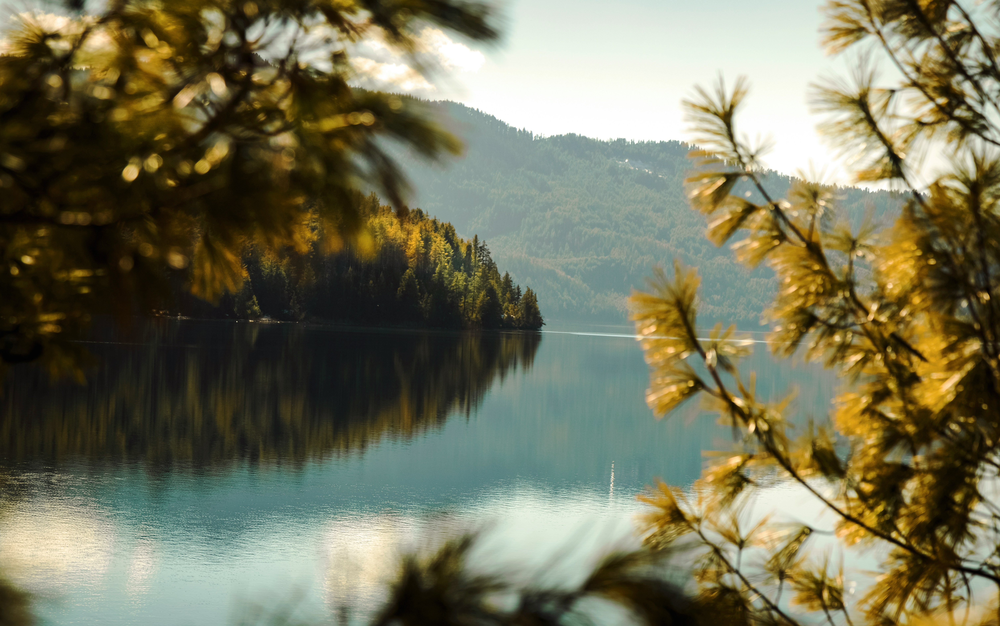
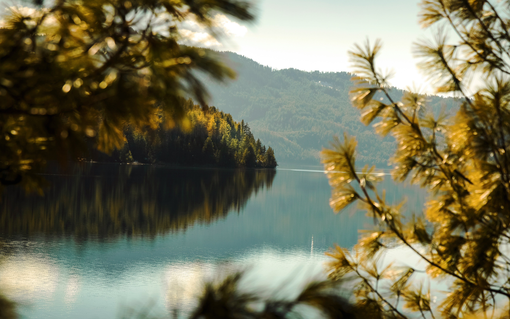
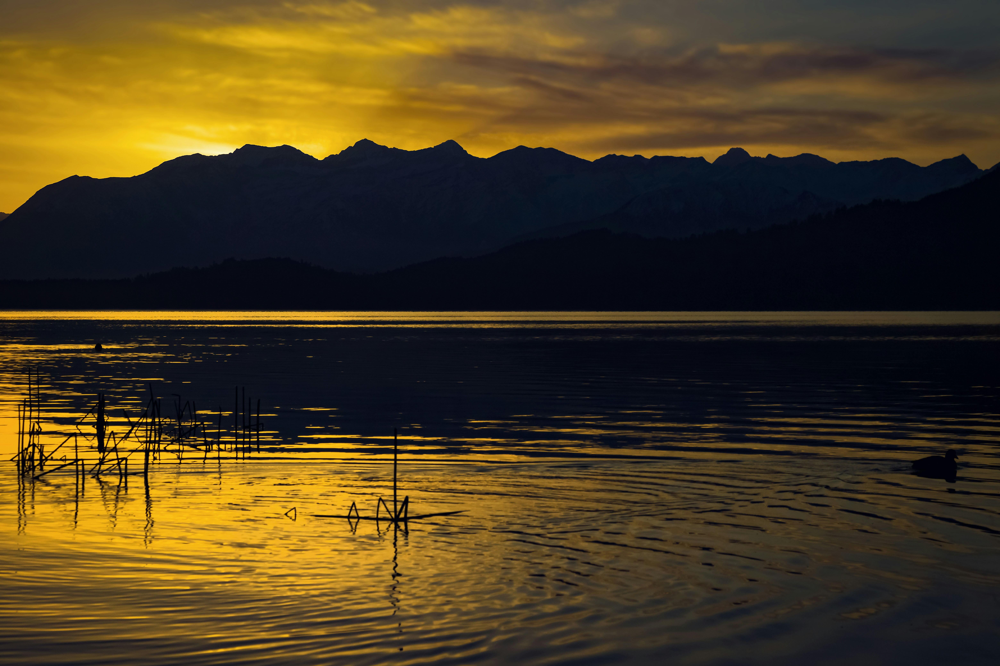
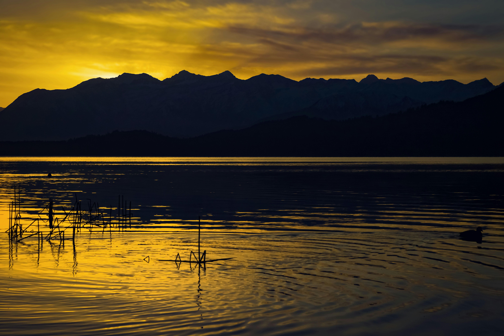
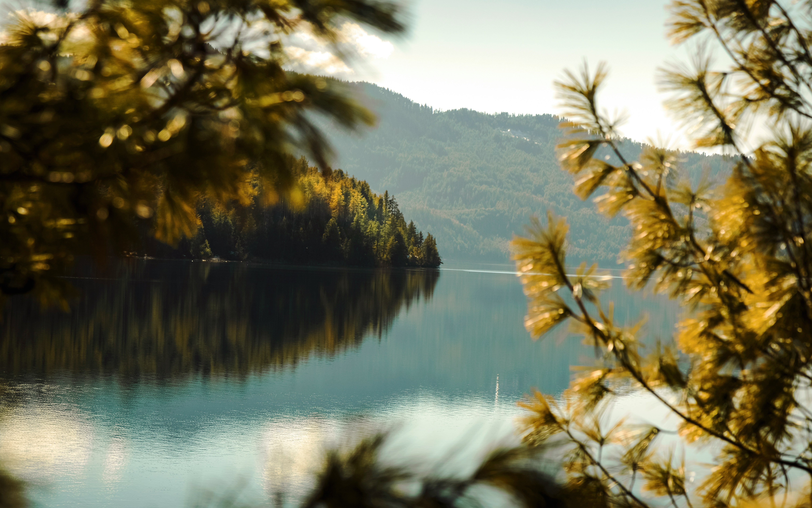
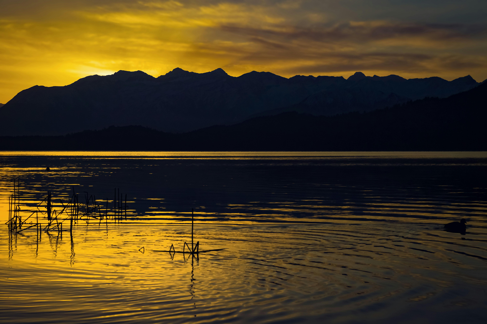

Gallery
 



 

Largest lake in Nepal, located in remote Mugu District within Rara National Park, famous for its pristine blue waters and wilderness.
| Feature | Detail |
|---|---|
| Location | Mugu District, Karnali Province, Western Nepal |
| National Park | Rara National Park (Nepal's smallest) |
| Altitude (Elevation) | Approx. 2,990 m (9,810 ft) |
| Size | Max length 5 km, max width 3 km, area ~10.8 sq km |
| Depth | Maximum 167 m (548 ft) |
| Significance | Largest lake in Nepal, often called the "Queen of Lakes" |
Difficulty: Moderate. Remote trails with steep ascents and descents. Duration: 12–16 days from Kathmandu, shorter via connecting flights.
Autumn (Sept–Nov): Mild, clear skies.
Spring (Mar–May): Blooming rhododendrons, warmer days.
Winter (Dec–Feb): Very cold with snow.
Monsoon (Jun–Aug): Heavy rain, slippery trails.
Flora: Lower elevations have Blue Pine, Rhododendrons, Himalayan spruce, juniper, and oak. Higher elevations feature fir, spruce, and pine.
| Category | Notable Species |
|---|---|
| Mammals | Musk Deer, Himalayan Black Bear, Leopard, Red Panda (rare), Himalayan Tahr, Wild Dog, Common Langur, Rhesus Macaque |
| Birds | Over 200 species including Coots, Snow Cock, Pheasants, Mallards, and migratory waterfowls |
| Aquatic Life | Three endemic fish species, found nowhere else |
| Mode of Transport | Route / Duration |
|---|---|
| Fastest | Kathmandu → Nepalgunj (1 hr) → Talcha Airport (30–45 min) → Trek to lake (2–3 hrs) |
| Standard Trek | Kathmandu → Nepalgunj → Jumla Airport → Trek to lake (4–7 days) |
| Overland | Long jeep journey (2–4 days) to nearest roadhead, then trek to lake |
Facilities are basic; teahouses or lodges are simple. Carry cash, warm clothing, and first aid kit.

